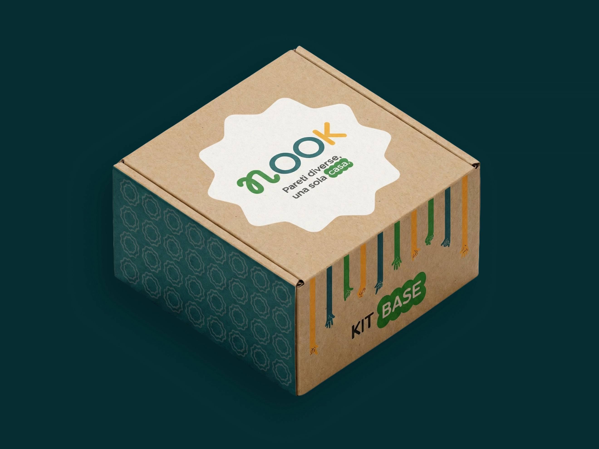
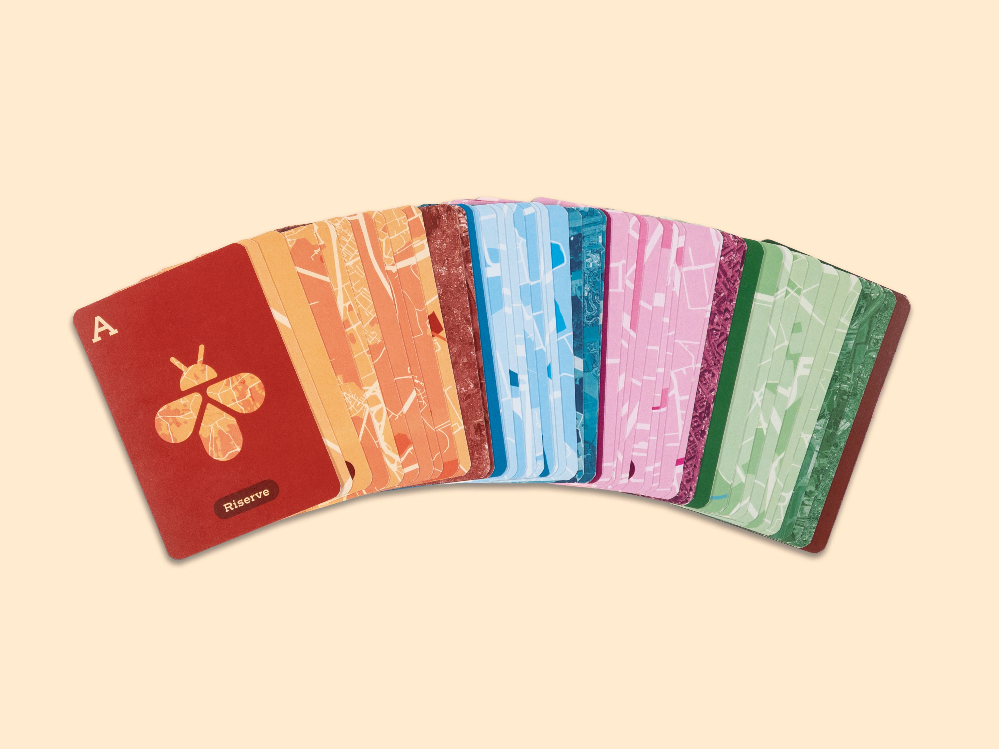
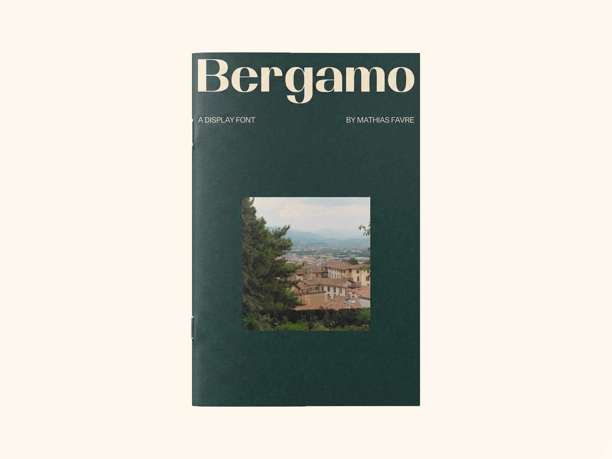
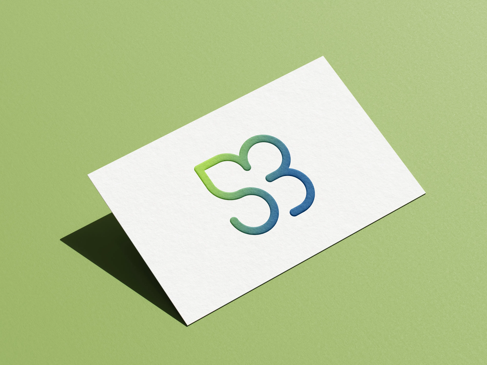

each
project
combines
vision,
purpose,
iteration
and
experience.
A selection of projects from my academic work, freelance collaborations, and personal explorations.
9 PROJECTS
Tonica
A display typeface inspired by halftone printing and the iconic forms of Helvetica.
Blackcat Society
Identity for a Murder Mystery club inspired by Edgar Allan Poe literary universe.

Nook
A service designed to help students living away from home build a sense of belonging in student housing.
World Metro
An interactive visualization of the evolution and global expansion of metro systems.
Licalbe Steiner
A monographic magazine exploring the work of Lica and Albe Steiner through editorial design and archival research.

BioMI²
A deck of playing cards celebrating Milan’s natural landscapes through Gestalt principles and visual perception.

Bergamo
A high-contrast display typeface exploring expansion and neoclassical typographic influence.

Nutrizione Aosta
A visual identity for a nutrition practice rooted in clarity, balance, and natural elements.
StudyFlow
An AI-powered web app designed to help students plan, organize, and optimize their study sessions.